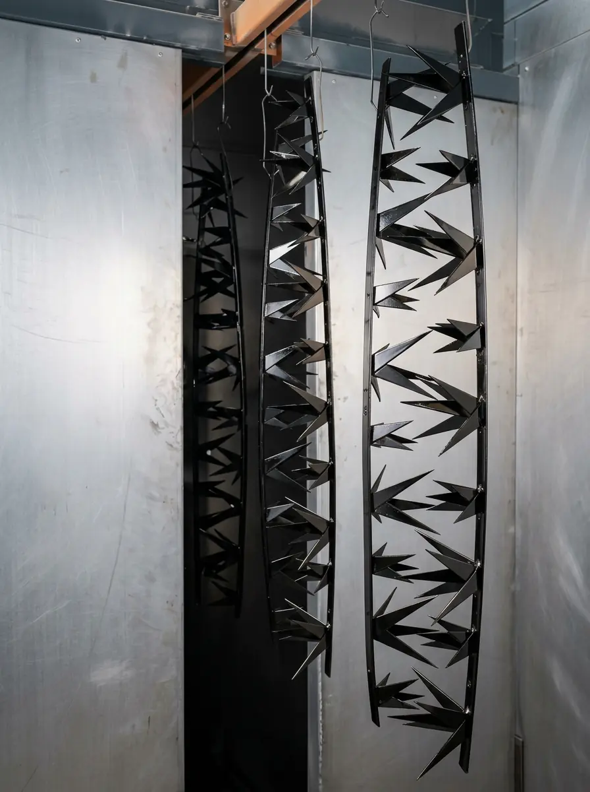

La pintura electrostática negra es uno de los acabados más pedidos en piezas metálicas, pero no existe un solo negro: cambia según el brillo (mate, satinado o brillante), la textura y el código del fabricante. La decisión de fondo es qué acabado de negro conviene a tu pieza.
Esta guía se enfoca solo en el negro. Si necesitas el panorama completo de tonos, revisa colores de pintura electrostática y carta RAL; para ver a fondo las texturas, está la guía de pintura electrostática texturizada.
En Steel Paint somos maquiladores de pintura en polvo: aplicamos el polvo del fabricante que indica tu especificación. Si apenas conoces la tecnología, empieza por qué es la pintura electrostática.
Por qué el negro es tan pedido (y qué lo hace exigente)
El negro combina con casi todo, se ve sobrio y es práctico para piezas que quedan a la vista: soportes, gabinetes, herrería, barandales, bastidores. Por eso aparece en casi todas las industrias, desde autopartes hasta mueble metálico.
También es el color más exigente. Sobre un fondo oscuro se notan más el polvo, los rayones, las marcas de manejo y cualquier irregularidad de la superficie. Elegir bien el acabado es la mejor forma de compensar esa característica.
Negro mate, satinado, brillante o texturizado: cómo se comparan
Todos usan el mismo color; lo que cambia es cómo reflejan la luz y qué tanto muestran.
| Acabado | Cómo se ve | Conviene para |
|---|---|---|
| Mate | Sobrio, sin reflejos | Piezas visibles y de diseño |
| Satinado | Brillo suave y equilibrado | Uso general e industrial |
| Brillante | Profundo, tipo espejo | Piezas decorativas, bien preparadas |
| Texturizado | Con relieve, opaco | Piezas de uso rudo |
El nivel de brillo se mide en unidades GU y los acabados lisos se explican en tipos de acabados en pintura electrostática. Aquí van las particularidades del negro:
- Negro mate: elimina reflejos y da un aspecto moderno. En un tono tan oscuro, el roce y la grasa de las manos pueden verse como marcas, así que valida con una muestra si la pieza se toca mucho
- Negro satinado: es el punto medio y el más versátil: disimula algo de imperfección sin verse apagado
- Negro brillante: el más llamativo, pero también el que delata cualquier defecto de la lámina, polvo o escurrimiento. Pide una preparación impecable
- Negro texturizado: el relieve esconde marcas y reduce reflejos, y es muy común en gabinetes y maquinaria. Se limpia con más trabajo que un liso
Qué negro elegir: RAL 9005 y sus vecinos
Si tu especificación usa la carta RAL, estos son los negros que más se mencionan:
- RAL 9005, negro intenso: el más usado cuando se pide "negro" sin más detalle.
- RAL 9011, negro grafito: un negro un poco más suave, con tendencia al gris oscuro.
- RAL 9017, negro tráfico: se usa con frecuencia en señalización y elementos urbanos.
La referencia RAL no garantiza que dos fabricantes den exactamente el mismo tono. Por eso conviene fijar un fabricante y un código, como vimos en marcas de pintura en polvo en México.
Qué acabado de negro elegir según el uso
Estos ejemplos generales muestran cómo cambia la elección según la pieza:
- Gabinete o carcasa interior que se toca poco: negro mate o texturizado, por sobriedad y porque esconde marcas de fabricación.
- Soporte o bracket visible en un ensamble: negro satinado, que equilibra aspecto y facilidad de limpieza.
- Herrería decorativa o mobiliario de diseño: negro mate o brillante según el estilo, con preparación impecable si es brillante.
- Barandal o estructura exterior: negro satinado o mate con polvo para intemperie, considerando el calor que absorbe.
- Pieza de uso rudo o que se golpea: negro texturizado, que disimula roces y reduce reflejos.
Negro en ensambles: cómo evitar diferencias entre piezas
Los negros son los que más se delatan cuando se juntan piezas distintas. Un panel con un negro ligeramente más azulado junto a otro más cálido, o uno mate junto a uno satinado, se nota de inmediato aunque cada pieza sea correcta por separado.
Para evitarlo, pinta todo el conjunto con el mismo fabricante, el mismo código y el mismo brillo, de preferencia en el mismo periodo de producción. Si las piezas llegan por separado, valida cada lote contra una muestra aprobada.
Cuidados especiales de la pintura electrostática negra
Para que el negro se vea como lo imaginaste, ten presentes estos puntos:
- Preparación: el metal limpio y bien tratado marca la diferencia en acabados oscuros y brillantes; revisa preparación de superficie para powder coating
- Calor en exterior: un negro absorbe más calor del sol que un color claro; en piezas expuestas toma en cuenta la temperatura de la superficie
- Resina para intemperie: en exterior la resina pesa más que el color, y el poliéster es el punto de partida habitual, como se explica en tipos de pintura en polvo
- Piezas a alta temperatura: si la pieza trabaja muy caliente, consulta si el polvo está pensado para ese uso antes de elegirlo
- Consistencia entre lotes: mantén el mismo código y valida cada lote contra una muestra aprobada
Dónde se usa el negro en la industria del noreste
En Monterrey y su zona metropolitana, el negro aparece sobre todo en soportes y componentes de autopartes, gabinetes y carcasas de equipos, mobiliario de herrería y estructuras visibles. Cuando el negro va en el exterior, la combinación de brillo bajo y resina de intemperie suele ser la más práctica, como vemos en la guía de muebles metálicos de exterior.
Errores comunes al pedir pintura electrostática negra
- Pedir "negro" sin especificar brillo ni código: dos negros pueden verse muy distintos entre sí.
- Elegir negro brillante para una pieza con soldaduras y marcas: el brillo las delata.
- Comparar el color en pantalla en lugar de usar un panel físico aprobado.
- Mezclar en un mismo ensamble piezas negras de lotes, brillos o fabricantes distintos.
- Usar un polvo de interior en una pieza que va a la intemperie.
Cómo limpiar y mantener una pieza negra
En colores oscuros el polvo y las marcas se notan más, así que conviene limpiar con regularidad. Usa un paño suave con agua y jabón neutro, enjuaga bien y evita abrasivos o pulidos fuertes, que pueden cambiar el brillo del acabado. Si la pieza está en exterior, lavarla de vez en cuando retira el polvo que opaca el color. Para el mantenimiento de piezas expuestas al sol, revisa cuánto dura la pintura electrostática en exteriores.
Cómo validar tu negro antes de procesar el lote
- Define el código del polvo y el fabricante, no solo "negro".
- Solicita un panel de muestra o usa el catálogo físico del fabricante.
- Revísalo con la luz en la que se verá la pieza, no solo bajo luz de oficina.
- Compáralo junto a las piezas con las que se ensamblará.
- Aprueba por escrito la muestra y mantenla como referencia para los siguientes lotes.
Preguntas frecuentes sobre la pintura electrostática negra
¿Qué negro de pintura electrostática es el más usado?
El RAL 9005, conocido como negro intenso, es de los más pedidos. Otros negros de la carta RAL, como el 9011 (grafito) y el 9017 (tráfico), tienen un tono ligeramente distinto.
¿Cuál es la diferencia entre negro mate y negro brillante?
La diferencia es cuánta luz refleja la superficie. El mate la dispersa y se ve sobrio y sin reflejos; el brillante la refleja y da un aspecto profundo y pulido, pero muestra más cualquier imperfección o marca.
¿La pintura negra muestra más los rayones y el polvo?
Sí, los colores oscuros hacen más visibles las marcas, el polvo y los rayones, sobre todo en acabados brillantes. Un negro texturizado o mate suele disimularlos mejor.
¿Se puede usar pintura electrostática negra en exterior?
Sí, con un polvo formulado para intemperie. Un negro absorbe más calor del sol que un tono claro, así que conviene considerar la temperatura de la superficie y la resina del polvo.
¿El negro se ve igual en todos los lotes y marcas?
No siempre. Dos polvos negros pueden diferir en tono (más azulado o más cálido) y en nivel de brillo. Valida con un panel de muestra y mantén el mismo fabricante y código en todos los lotes.
Define tu negro en tres decisiones
Para pedir un negro sin sorpresas, resuelve tres cosas en orden: el nivel de brillo que quieres ver, la textura que necesita la superficie y el código exacto del polvo. Cuando esos tres datos están en papel y validados con una muestra, el negro deja de ser un color obvio y se vuelve una especificación que cualquier lote puede repetir.